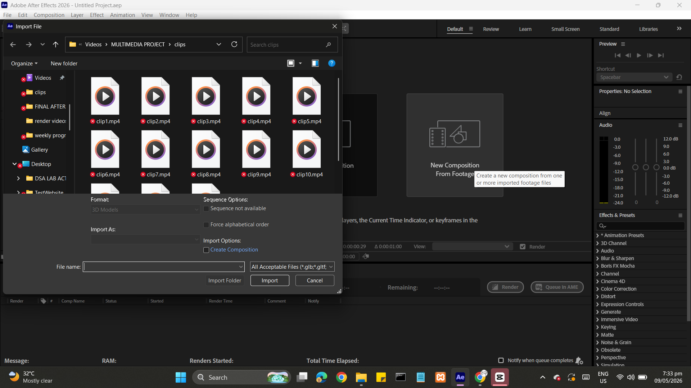
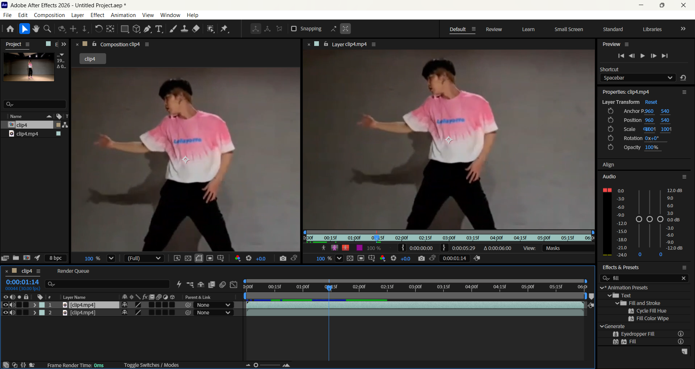
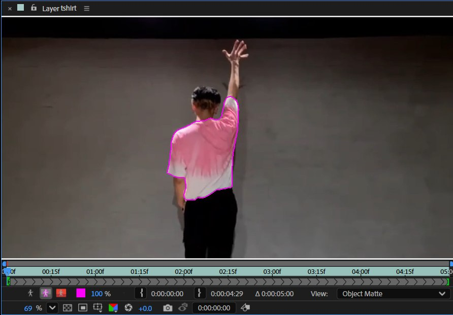
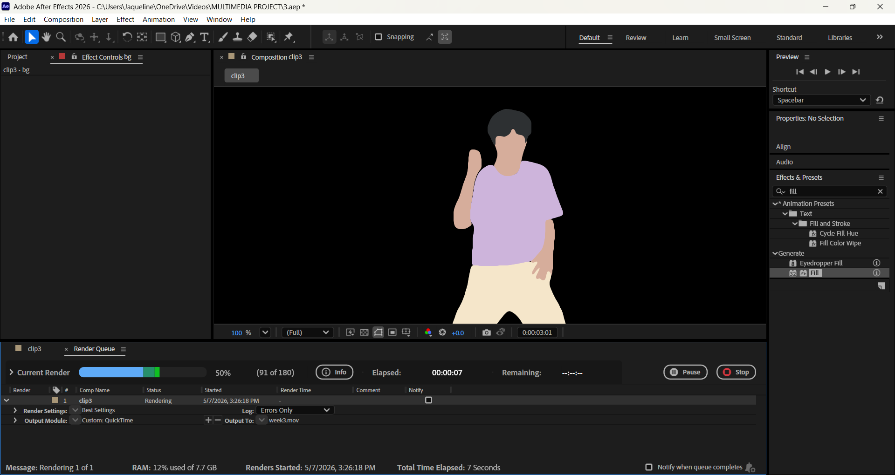

1-Minute Video Rotoscope
1-Minute Rotoscope Video
Disclaimer: This video was created for academic purposes only.
Step-by-Step Tutorial
Finding a Video Reference for Rotoscoping
Select a video reference that will serve as the foundation for your rotoscoping project. Choose footage with clear movements and distinct subjects. Ensure the video quality is high enough to trace accurately frame by frame.
Importing Video into Animation Software
Import your selected video into your animation or rotoscoping software (After Effects, Blender, etc.). Set up your timeline, import the video clip as a background layer, and ensure the frame rate matches your intended output.
- Duplicate a layer with Ctrl + D
- Delete a layer by selecting it and pressing Backspace
- To rename a layer, right-click the selected layer and choose Rename

Setting Up Tracing Tools and Layers
Create new layers for your rotoscope artwork and set up your brushes/pen tools. Adjust brush sizes, opacity, and colors to match your design.
- To choose a brush type, double-click the Object Matte tool, then long-press on your second click to open the brush options
- To adjust brush size, hold Ctrl, then double-click and drag to expand or shrink it

Rotoscoping Frame by Frame
Begin tracing over the video frame by frame. Pay attention to details, edges, and movement. Work systematically through each frame, maintaining consistency in line quality and style.
- Move to the next frame with Ctrl + →, or go back with Ctrl + ←
- Once all frames are traced, click Freeze to prevent accidental edits or trace lines mixing between layers

Refining and Adding Details
After completing the initial rotoscope, go back and refine your work. Add shadows, highlights, and additional details. Check for consistency across frames and smooth out any jittery lines or transitions.
- To color a layer, select it, then go to Effects & Presets → search and apply Fill
- Click the rectangular color swatch to choose a color, or type in a specific color code
- Once colored, click Lock on each layer to prevent repeated, unwanted propagation

Exporting and Post-Production
Export your finished rotoscope animation in the desired format. Apply any additional effects, color corrections, or compositing. Save multiple versions and prepare your final video for playback and sharing.
- Go to File → Export → Add to Render Queue
- Click the .mp4 output text to change the file name
- Open Output Module and set: Format — QuickTime, Channels — RGB + Alpha, Color — Straight (Unmatted)
- Under Format Options, set Video Codec to Apple ProRes 4444
